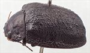
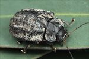
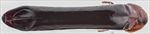
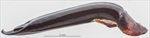
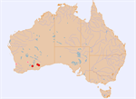

Click on images to enlarge
{kind=link}

Female, Balladonia, Western Australia
![Female, Balladonia, Western Australia [photo: Geoff Walker]](assets/image/Ta151/Ta151_A17-227c.jpg){kind=link}

Female, Balladonia, Western Australia [photo: Geoff Walker]
{kind=link}

Aedeagus, dorsal view (Salmon Gums, S.W. Western Australia)
{kind=link}

Aedeagus, lateral view (Salmon Gums, S.W. Western Australia)
{kind=link}

Distribution (pale-coloured circles indicate records obtained from iNaturalist)
Name
Trachymela explanata (Chapuis)
Reference specimen
2017-226, Balladonia, Western Australia.
Adult Description
Length: ♀ 12.6-15.5 mm [5], ♂ 14.5-15.8 mm [5].
Colour: head dark reddish-brown, with variable areas of black, most frequently confined to area around fronto-clypeal suture and on clypeus, sometimes extending onto frons, sometimes almost all of clypeus and frons black, labrum straw-brown, mandibles black; antennomeres 1-3 straw-brown, 4-5 grading towards dark-brown or black, 6-11 dark-brown or black, often with only distal edge of antennomeres black; pronotum: completely black or almost so; scutellum: black; elytra: completely black, or almost so, if not completely black, verrucae and raised ridges black; humeral callus black; venter: almost completely black, legs sometimes slightly paler, inside surface of elytral epipleura black. Cuticular wax: greyish, distributed mostly lightly and unevenly over most of dorsal surface, with the most prominent denser coverage along lateral margins of pronotum and in broad longitudinal bands on elytral disc roughly between VR3 and VR4 and along VR7.
Shape: rather flattened (height=0.34-0.44%BL) almost evenly curved from scutellum to about 60% of distance to apex where curvature decreases for a distance before increasing again, greatest height viewed laterally well in front of middle. Head; punctures usually fine (pd~1.5-2.5xef), but a few scattered larger punctures often present, distribution relatively uniform. Antennae moderately long (AL ♂=40-41%BL, ♀=37-41%BL), filiform. Pronotum; evenly curved transversely over discal area, with a deep foveal depression behind eyes and a strongly explanate margin, foveal elevation present on inner edge of depression but usually relatively small and inconspicuous, discal area smooth or slightly rugulose, sometimes with a small elevation at each lateral boundary, sometimes with a thin, unpunctured ridge along centre line, punctures clearly impressed and evenly and densely distributed in discal area, size similar or fractionally larger than those on head becoming considerably coarser from foveal depression to lateral margins. Front margins join thinner lateral margins in a smoothly rounded right-angle, with lateral margin initially straight for about half their length, then curving smoothly towards rear margin. Scutellum; surface shagreened or slightly rugulose, unpunctured. Elytra; surface curved evenly over disc transversely, often prominently explanate at margins, whole surface, including margins, very granular with punctures small but over much of the surface almost hidden by a network of raised interstices, many smooth, elevated verrucae, some with small central punctures, some extended into short longitudinal ridges are scattered over elytral surface, their sizes varying from very small (similar to size of punctures) to much larger, their linear arrangement rarely evident except in VR3 and VR5; posterior third of elytral suture carinate, surface discontinuous under humeral callus; posterior half of marginal area prominently concave, separated from anterior half by a poorly-defined transverse ridge. Vertical extension of epipleura small (HCE/PW=0.32-0.34). Venter; Prosternal process narrowest anteriorly, closed anteriorly, short setae sparsely distributed over prosternal process and mesosternum, 1 or 2 setae on anterior and 1 each on median and posterior trochanters; front edge of metasternum beveled, truncate; inner edge of posterior of epipleura lacking setae. Aedeagus; very long and narrow (LPE=50-53%BL, WPE/LPE=0.16-0.18), in dorsal view, almost parallel-sided, widest near basal sulcus and near anterior end of ostium, with the sides between these points almost parallel, from the widest point anteriorly sides converge in an almost straight line towards apex with tip rounded and blunt, ostial depression in form of a slightly elongated ellipse, dorsal ostial processes small, occupying little more than half of depression; spatula relatively large, tip small; in lateral view, curved sharply through about 45⁰ near base then ventral surface almost straight to apex, dorsal surface straight and parallel to ventral surface from basal sulcus to rear of ostium, then converging evenly towards ventral surface, tip strongly deflexed.
Larvae
unknown.
Eggs
unknown.
Similar species
Ta73 – a smaller, but very similar species structurally that occurs in the mallee areas of South Australia and Victoria.
Notes
This is the largest known species of Trachymela. Its identification as T. explanata (Chapuis) is from the original description and type locality. No host records for this species are available.
Copyright © 2026. All rights reserved.